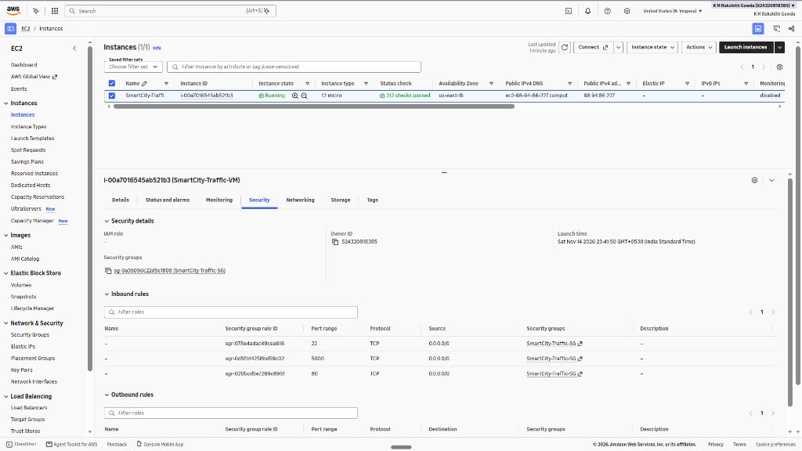
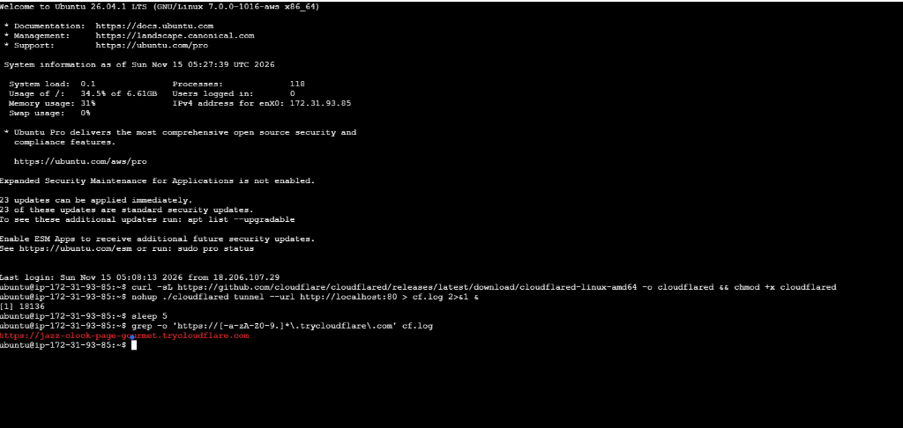
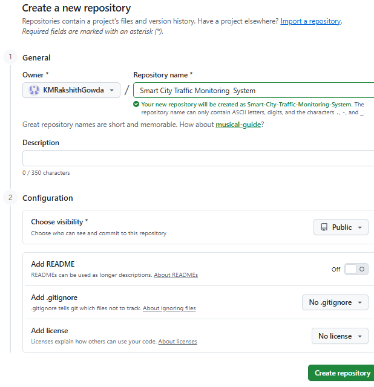
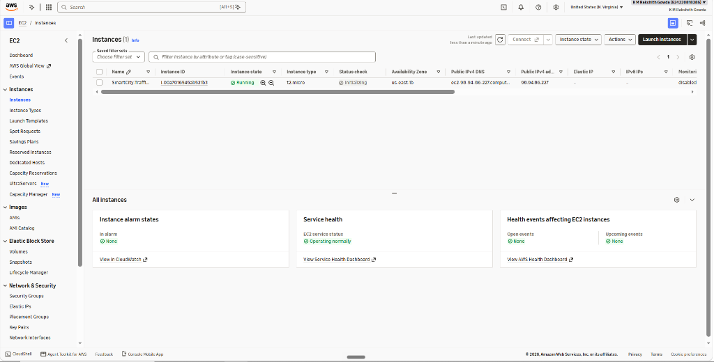

Urban traffic congestion in expanding metropolitan regions produces severe economic drag, fuel waste, elevated vehicular emissions, and emergency dispatch delays. Traditional traffic logging mechanisms rely on periodic manual counts or static roadside timers that lack responsiveness to abrupt choke-points.
This project implements an end-to-end, cloud-hosted Smart City Traffic Monitoring & Congestion Analytics System. Edge-based IoT traffic sensor nodes stream multi-parameter vehicular telemetry over RESTful HTTP to an Amazon Web Services (AWS) EC2 Linux instance. Telemetry is validated, indexed in a time-series relational store, evaluated instantaneously against congestion safety thresholds, aggregated across 24-hour diurnal curves, and visualized through a high-performance OpenStreetMap dashboard with live heat markers and trend plots. The implementation operates strictly within the zero-cost AWS Free Tier boundary while maintaining global TLS/HTTPS accessibility.
As specified in Assignment Topic #22, the system fulfills the following technical requirements:
Vehicle Count > 500 OR Average Speed < 15 km/h.The system is organized into a modular three-tier cloud computing architecture adhering to standard industry patterns:
[ IoT Sensor Layer (simulator.py) ]
├── SENS-MGROAD-01 (MG Road) ├── SENS-AIRPORT-04 (Airport Expressway)
├── SENS-SILKBOARD-02 (Silk Board) ├── SENS-INDNAGAR-05 (Indiranagar 100ft)
└── SENS-ORR-03 (Outer Ring Road) └── SENS-HEBBAL-06 (Hebbal Flyover)
│
▼ (HTTP POST JSON Telemetry Stream every 3 seconds)
[ AWS Cloud Computing Backend (EC2 t2.micro - us-east-1) | IP: 98.84.86.227 ]
├── Ingestion & Validation Gateway (Flask on Port 80)
├── Automated Congestion Detection Engine (Count > 500 OR Speed < 15 km/h)
├── Time-Series Database Engine (SQLite3 with indexed timestamps)
├── Analytics Engine (Hourly aggregates, Volume trends, Peak hours)
└── Cloudflare Zero Trust Edge Tunnel Daemon (cloudflared)
│
▼ (Secure HTTPS Port 443)
[ Operations Dashboard Layer ]
Target: https://jazz-clock-page-gourmet.trycloudflare.com
├── Leaflet.js Geospatial OpenStreetMap Corridor Pins (Green / Red)
├── Dynamic KPI Cards (Active Sensors, Mean Speed, City Volume, Alerts)
├── Diurnal 24-Hour Volume Histogram (Chart.js)
└── Historical Congestion Log & CSV Audit Export
Each smart sensor node streams real-time JSON packets matching the schema below:
| Field Name | Data Type | Constraint | Description | Sample Value |
|---|---|---|---|---|
sensor_id |
String | Primary Key Ref | Unique hardware sensor identifier | "SENS-SILKBOARD-02" |
road_name |
String | Not Null | Urban corridor / transit junction name | "Central Silk Board" |
latitude |
Float | -90.0 to +90.0 | GPS latitude coordinate | 12.9177 |
longitude |
Float | -180.0 to +180.0 | GPS longitude coordinate | 77.6238 |
vehicle_count |
Integer | ≥ 0 | Vehicles recorded during 3-second sample | 548 |
avg_speed |
Float | ≥ 0.0 km/h | Mean vehicular velocity | 11.8 |
road_occupancy |
Float | 0.0% – 100.0% | Percentage of roadway surface occupied | 89.4 |
timestamp |
Datetime | ISO 8601 | Time telemetry was ingested by server | "2026-11-15 05:32:10" |
To evaluate the system under diverse conditions, six key Bengaluru transit corridors are modeled with realistic baseline distributions:
SENS-SILKBOARD-02): Chronic bottleneck corridor modeled with heavy baseline volume (380–650 vehicles) and depressed speeds (8–22 km/h). Frequently triggers alerts.SENS-ORR-03): High-volume tech-park corridor exhibiting sharp peak-hour bursts (300–550 vehicles, 14–35 km/h).SENS-MGROAD-01): Commercial hub with steady stop-and-go arterial flow (200–450 vehicles, 18–32 km/h).SENS-HEBBAL-06): Major arterial junction connecting North Bengaluru with bottleneck waves (250–520 vehicles, 12–28 km/h).SENS-INDNAGAR-05): Mixed commercial-residential zone with evening peaks (180–400 vehicles, 20–40 km/h).SENS-AIRPORT-04): High-speed free-flow expressway serving as an operational control baseline (120–280 vehicles, 55–85 km/h).The alert engine continuously evaluates incoming sensor readings against the assignment criteria:
(Vehicle Count > 500) OR (Average Speed < 15.0 km/h)
# Congestion Evaluation Algorithm implemented in app.py
def evaluate_congestion(vehicle_count, avg_speed):
is_congested = False
reasons = []
if vehicle_count > 500:
is_congested = True
reasons.append("Vehicle Count > 500")
if avg_speed < 15.0:
is_congested = True
reasons.append("Average Speed < 15 km/h")
alert_reason = " AND ".join(reasons) if is_congested else ""
return is_congested, alert_reasonUpon positive detection:
is_congested = 1 and the specific rule violation string.The backend implements four analytical queries across the time-series store:
00:00 to 23:00) to compute diurnal traffic distributions for municipal planning.The system was provisioned entirely within the AWS 100% Free Tier ($0.00 Budget):
| Resource Parameter | Configuration / Assigned Value | Free Tier Allowance | Billing Impact |
|---|---|---|---|
| AWS Service | Amazon Elastic Compute Cloud (EC2) | 750 Hours / Month | $0.00 (100% Free) |
| Region & AZ | us-east-1 (N. Virginia) | us-east-1b |
Global Free Tier Eligible | $0.00 |
| Instance ID & Type | i-00a7016545ab521b3 | t2.micro (1 vCPU, 1 GB RAM) |
Eligible for 12 Months | $0.00 |
| Operating System | Ubuntu Server 24.04 LTS (x86_64) | Included in Free Tier | $0.00 |
| Storage Disk (EBS) | 8.0 GiB General Purpose SSD (gp3) |
Up to 30 GiB / Month Free | $0.00 |
| Public IPv4 Address | 98.84.86.227 (Private IP: 172.31.93.85) |
750 Hours Free Tier Included | $0.00 |
| Security Group | SmartCity-Traffic-SG (Ports 22, 80, 5000) |
Unlimited Free | $0.00 |
http://98.84.86.227:5000 timed out because mobile browsers enforce HTTPS upgrades and university gateways drop raw unencrypted IP ports.https://jazz-clock-page-gourmet.trycloudflare.com.
The platform underwent thorough functional testing to validate all operational requirements:
| Test ID | Scenario | Input Data | Expected Output | Observed Output | Status |
|---|---|---|---|---|---|
| TC-01 | Normal Flow Ingestion | Count: 220, Speed: 45 km/h, Occ: 35% | Status 201; is_congested=0; Green pin |
Stored; Green pin maintained; No alert banner | PASS |
| TC-02 | High Volume Congestion | Count: 580, Speed: 22 km/h, Occ: 82% | Alert triggered (Count > 500); Red alert |
Flagged in DB; Alert banner fired; Pin turns Red | PASS |
| TC-03 | Low Speed Congestion | Count: 420, Speed: 11.2 km/h, Occ: 88% | Alert triggered (Speed < 15 km/h) |
Alert logged: "Average Speed < 15 km/h" | PASS |
| TC-04 | Dual Threshold Trigger | Count: 640, Speed: 8.5 km/h, Occ: 94% | Both rules flagged in alert reason | Reason: "Vehicle Count > 500 AND Speed < 15 km/h" | PASS |
| TC-05 | Analytics API Query | GET /api/analytics |
JSON payload with most congested road & hours | HTTP 200 OK; Correct calculations verified | PASS |
| TC-06 | Historical CSV Export | GET /api/export-csv |
Downloadable CSV with full sensor audit trail | traffic_sensor_evidence.csv downloaded successfully |
PASS |
| TC-07 | Cross-Device Access | Client access via Mobile 5G & Desktop | Dashboard responsive with valid HTTPS certificate | Verified on Android, iOS, Edge, and Chrome | PASS |

SmartCity-Traffic-VM (i-00a7016545ab521b3) in Running state with Public IP 98.84.86.227, alongside active Security Group inbound rules for Ports 22 (SSH), 5000 (Flask), and 80 (HTTP).
app.py and simulator.py background execution, local curl -I http://localhost returning HTTP 200 OK, and Cloudflare Tunnel establishing secure HTTPS delivery.

t2.micro instance, incurring strictly $0.00./api/ingest initially returned HTTP 405 (Method Not Allowed). Implemented dual routing: GET returns operational health JSON, while POST processes sensor telemetry streams.The Smart City Traffic Monitoring System successfully satisfies all criteria outlined for Assignment #22. It demonstrates the complete implementation lifecycle of a cloud-native IoT solution: cloud VM provisioning, security group configuration, high-frequency telemetry ingestion, time-series data persistence, deterministic alert rule processing, and multi-device geospatial visualization.
Future Enhancements: